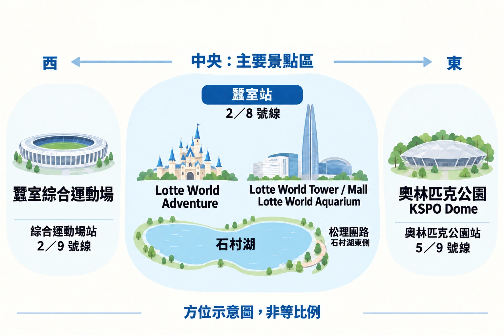

蠶室旅遊指南 2026
把名稱裡有「Lotte」的地方都當成同一個景點，蠶室就容易讓人混淆。

對多數旅客，更值得先問的其實很簡單： 你是為了 Lotte World、蠶室的高塔與湖畔一帶，還是一場球賽或演唱會而來？
這是三種不同的一日行程。全湊在一起，通常會花更多時間走路、等待與橫越松坡，真正享受各個地方的時間反而少了。
先選你的蠶室一日行程
來蠶室前，不需要一長串景點清單，而是先決定當天的主軸。
如果是為了 Lotte World 而來
把大半天留給樂園。
把 Lotte World 當成水族館、Seoul Sky 與奧林匹克公園之間的一站，就是常見錯誤。一旦要排隊、吃飯，雙腳也累了，這種行程很快就走不下去。
逛完樂園還有體力的話，去石村湖或在商場吃晚餐，會是輕鬆得多的結尾。
如果對主題樂園沒興趣
蠶室仍值得安排。
先逛高塔或水族館，再到戶外的石村湖；想吃飯，或想在比商場小一點的地方坐下時，再往松理團街。
天氣晴朗時，Seoul Sky 可以放最後，不必當第一站。
如果為了棒球或演唱會而來
以活動安排整天。
KSPO Dome 演唱會在松坡的奧林匹克公園一側，棒球賽則在綜合運動場一側。兩者都不該被當成 Lotte World 周邊順便延伸的一小站。
提早結束觀光，別讓自己同時處理場館入口、晚餐與末班車。
快速認識蠶室
地圖上，蠶室像是一個集中的娛樂區。把它理解成 一個主要區塊，外加兩個獨立延伸區。
主要區塊在蠶室站周邊：Lotte World Adventure、Lotte World Tower、商場、水族館與石村湖。想離開主要複合區找咖啡廳或晚餐，可以往湖另一側的松理團街。
奧林匹克公園與 KSPO Dome 是東側延伸區，蠶室綜合運動場則在西側。

這幾區可以串連，但不需要全放在同一天。
石村湖不只是景點間的一個小池塘。東湖與西湖的官方環湖步行路線約 2.5 公里，走完一圈就是行程中的一段正式安排，尤其帶孩子，或已經在 Lotte World 逛了幾小時之後。

從蠶室站開始，但先知道要去哪一側
蠶室站很方便，但不只有一個入口。
去 Lotte World Tower、商場或水族館，和去 Lotte World Adventure，使用的是複合區不同的一側。
推嬰兒車、帶孩子，或只是想避免前 20 分鐘都在地下跟錯指標時，這點更重要。
往高塔一側，先記 2 號出口；往 Adventure 一側，則依 Lotte World 指標朝 4 號出口走。進入複合區後，現場指標會比只靠街道地圖找所有地方更有用。
也別把蠶室站當成所有松坡活動的起點。去 KSPO Dome，奧林匹克公園站更適合；官方場館指引標示 5、9 號線與 3 號出口。
路線 1 — 把一天留給 Lotte World
如果 Lotte World 是你來首爾的主要原因之一，就別把它當成兩小時的一站。
樂園可能不知不覺就占去一整天。
不只有排隊，還包括用餐、找下一項設施、在室內 Adventure 與室外 Magic Island 之間移動，以及同行者需要時停下休息。
更好的計畫，是進園前先想清楚，怎樣才算今天玩得滿足。
對某個人來說，可能是玩到三項主要設施。
對家庭來說，可能是遊樂設施、遊行、室內景點與足夠休息的搭配，讓大家不會下午過半就累壞。
先完成這些重點。
之後玩的，都是額外收穫。
重視樂園，就早一點開始
平日上午進園，比午餐後才到、再想辦法追回時間，更有調整計畫的餘裕。
帶孩子時尤其如此。
前幾小時順利，後面就可以放慢。
如果樂園已經很擠，至少你會在把半天花在較不重要的景點前，就知道這件事。
目前票制也有 After4 選項，但那是另一種逛法。如果 Lotte World 是蠶室當天的主軸，就以全日入場安排，不要以為下午晚些入場的票能帶來相同體驗。
之後不必自動加上奧林匹克公園
這很容易讓蠶室行程在地圖上看似有效率，實際卻走得很辛苦。
玩了一整天樂園後，短暫散步逛石村湖，或在附近吃晚餐，都容易安排。
但橫越松坡，再加奧林匹克公園、另一個大型場館或演唱會，就是不同的決定。
如果 Lotte World 已經撐起整天，就讓它成為當天的結尾。

排隊會改變整天
規劃 Lotte World，最重要的不是裡面有幾項設施。
而是你願意接受多少等待。
近期旅客分享反覆提到熱門設施排隊很久，平日也一樣。這也說明大家為什麼會考慮 Magic Pass：不是每個人都需要，而是幾條長隊就能徹底改變當天玩得完的內容。
看到等候時間看板前，先選好重點
別帶著十五項「非玩不可」的清單進園。
挑出少數錯過了真的會失望的項目。
如果排隊時間合理，就去玩。
如果某一項已經要占去當天很大一段時間，加入隊伍前先決定值不值得。
這聽起來很明顯，直到站在現場開始想：「都來這麼遠了。」
這時，90 分鐘的隊伍就開始主導行程。

Magic Pass 能幫忙，但不能當作另一種入場票
目前 Magic Pass 是另付費的加購項目，仍需購買樂園門票。
它提供適用設施的專用等候隊伍，但不會省去所有等待、不適用每項設施，數量也有限。Lotte World 目前透過 App 販售，並提醒可能提早售罄。
所以，真正該問的不是：
「每個人都該買 Magic Pass 嗎？」
而是：
「多付這筆錢，能保住當天真正重視的部分嗎？」
如果同行的人主要想玩少數熱門設施，而園區又很擠，答案可能是肯定的。
如果帶著幼兒、步調較慢，並穿插遊樂設施、室內景點、用餐與休息，加購費用能解決的問題，可能比預期少。
預訂 Lotte World
如果 Lotte World 是當天主軸，抵達前先查看一般門票選項。
如果快速通關很重要，付款前另行比較目前 Magic Pass 規則。只有真正想玩的設施值得，額外費用才有意義。
家庭要考慮的，不只有身高限制，也包括體力與感官負擔
Lotte World 把很多活動集中在一起，對家庭可以很方便。
但不代表這一天一定輕鬆。
室內樂園可能吵雜又擁擠，動線分布在多個樓層。大人還沒玩完清單，幼兒可能早已累了。
如果大人一直查下一項設施，孩子卻需要吃飯、上廁所或找安靜的地方，行程就已經排得太滿。
帶小小孩時，玩得開心的一天，可能只是少玩幾項、少移動幾次。
這仍是一個完整的 Lotte World 一日行程。
路線 2 — 不進主題樂園的蠶室
不喜歡主題樂園，也能在蠶室好好逛半天或一整天。
較容易的版本，是待在高塔與湖畔這一側：
高塔或水族館 → 石村湖 → 松理團街 → 天氣值得時再上 Seoul Sky。
這個順序保留了調整餘裕，不必還沒知道天氣或體力狀況，就先把時間表鎖死。
天氣不配合，就先從室內開始
下雨、酷熱或嚴寒時，水族館與 Lotte World Mall 是容易安排的室內起點。
但不代表整天都要待在複合區裡。
天氣改善，石村湖就在旁邊；沒有改善，也可以以室內為主，不必勉強走不舒服的戶外行程。
這也是蠶室適合家庭與不同年齡同行者的原因：原本計畫不再舒服時，還有別的地方可去。
較容易安排的室內選項
下雨、太熱或太冷，想改在室內活動時，水族館比排一整天主題樂園更容易和蠶室其他行程搭配。
水族館本身就是計畫的一部分時，最有意義，不只是因為另一個Lotte景點剛好在附近。
別太早把 Seoul Sky 排死
Seoul Sky 是蠶室最容易保留條件、視情況安排的景點之一。
晴朗時，景色值得你把它留到傍晚或日落。
霧霾或下雨時，只因已經排好就上去，未必最值得花時間。
決定前，看看實際天空。
高塔不會跑掉。
保留這種彈性，比把蠶室每個主要景點都塞進同一張清單更有用。
看過天空，再決定
能見度不錯，而且仍想看景色，再查看目前 Seoul Sky 門票。
如果天際線已被霧霾或雨遮住，就略過，不必勉強挽救原本計畫。
石村湖是一段散步，不只是拍照點
站在Lotte複合區旁邊，湖看起來很集中。
真正走起來，感受就不同。
東湖與西湖合起來的路線約 2.5 公里，悠閒走完一圈，不含中途停留就可能要一小時。
不必整圈都走完。
玩過 Lotte World，孩子可能已經不想再走。
逛完水族館，你也可能只想走一小段湖畔，到戶外換個角度看高塔。
這樣也很好。
石村湖應該讓當天多些喘息空間，而不是變成另一項待完成的任務。
依下一站，選要走哪一側
如果接下來要吃晚餐或喝咖啡，往 東湖與松理團街一側 會比只為了說自己走完，而硬繞一整圈更合理。
如果離開 Lotte World Adventure 時已經累了，即使只走西湖的一小段也可能足夠。
蠶室行程到了這裡，應保留彈性。
比起距離，下一步要做什麼更重要。

想離開Lotte園區的環境，就去松理團街
商場很方便。
有時這正是你需要的。
但如果已在Lotte設施內待了幾小時，走向松理團街，就能換一種尺度感受當天行程。
這一帶在石村湖另一側，有較小的餐廳與咖啡廳，不是大型複合區裡的另一層樓。
不必追某一間知名咖啡廳。
因為想坐下、吃飯，或在大型景點之後放慢步調，而安排這一段。
這就已經是足夠的理由。
商場，還是松理團街？
選 商場，適合以下情況：
- 有人累了
- 天氣不好
- 孩子需要方便吃一餐
- 不想再走一段路
- 便利比氛圍更重要
走往 松理團街，適合以下情況：
- 想離開複合區
- 同行的人還有體力
- 晚餐或咖啡時間是外出行程的一部分
- 希望蠶室後半段與前半段有不同感受
沒有哪個一定「比較好」。
它們解決的是當天不同的需求。
天氣會改變計畫
蠶室特別容易重排，因為幾項主要活動距離近，受天氣影響的程度卻很不同。
雨天：
水族館 → 商場 → 室內用餐。雨停一些時，再加湖畔散步。
晴天：
水族館或商場 → 湖畔 → 松理團街 → 晚些再上 Seoul Sky。
炎熱的夏日下午：
最熱的時段待在室內，接近傍晚再往湖畔。
霧霾天：
別把整份時間表都圍著觀景台排。Seoul Sky 保留彈性，景色不值得時，就把時間留在低處。
Seoul Sky 的營運資訊會依日期變動，包括閉館前停止入場時間。出發前應查看當期安排，不要只依賴指南裡寫死的時刻。
奧林匹克公園、棒球或演唱會的一天
球賽或演唱會，會改變蠶室行程的安排方式。
別先從景點清單開始，先看 場館，以及需要抵達的時間。
KSPO Dome 在奧林匹克公園裡，不在 Lotte World 旁邊。蠶室綜合運動場則在區域的另一側。兩者都在廣義的蠶室／松坡一帶，但不是可以互換的目的地。
成千上萬的人同時抵達或離開時，這個差別最重要。
去 KSPO Dome，先想到奧林匹克公園站
前往 KSPO Dome，適合的車站是 5 號線與 9 號線的奧林匹克公園站。場館官方指引建議使用 3 號出口。
別只因飯店搜尋或地圖寫著「蠶室」，就跑去蠶室站。
白天可以先逛 Lotte World 一帶，再接演唱會，但兩段之間要留足夠空檔。
舒服的版本是：
蠶室午餐或湖畔散步 → 回飯店或休息 → 奧林匹克公園 → 演唱會
較充實的版本是：
水族館或商場 → 提早吃晚餐 → 奧林匹克公園 → 演唱會
通常不太順的版本則是：
完整的 Lotte World 一日遊 → 匆匆吃晚餐 → KSPO Dome
地圖上看起來可行，但排隊、走路、穿過人潮後，可能像把兩個完整的一天硬擠在一起。

演唱會結束後，人潮也是返程的一部分
別以為大型演唱會結束後，走出場館、叫輛車，五分鐘就能離開。
可能有成千上萬的人同時離場。
搭地鐵的話，演出結束前就要知道路線。如果需要趕末班車，請確認當晚實際班次，不要以為車站顯示的最後一班，就能一路到你的目的地。
飯店若能搭 5 號線或 9 號線直達，演唱會後，這份單純會比訂房時想像的更有價值。
蠶室綜合運動場是另一個延伸區
棒球與其他大型活動，應安排在綜合運動場這一側。
蠶室綜合運動場可搭 地鐵 2 號線與 9 號線 前往，位置在 Lotte World 主要區塊以西。首爾官方設施資訊把這裡描述為多座場館與運動設施的集合，而不是單一場地。
看棒球前，先確認票上的場館，再安排其餘行程。
棒球日不需要再加另一個大型景點
簡單的版本就很好：
午餐 → 蠶室新川／市場一帶 → 球賽 → 晚些吃晚餐
如果還想觀光，就提早安排，內容輕一些。
上午逛宮殿，再看棒球，可能可行。
完整的主題樂園一日遊再接棒球，通常就會有一段被迫趕時間。
球場一側的蠶室新村傳統市場，比起回Lotte複合區，提供了更貼近日常的飲食選擇。

吃什麼 — 選方便，或離開複合區
蠶室有兩種很不同的用餐方式。
第一種很簡單：
留在Lotte複合區。
有人累了、天氣不好、孩子現在就要吃飯，或只是不想再做決定時，這就是合適的選擇。
走了幾小時之後，便利本身就有價值。
第二種，是以吃飯為理由離開複合區。
松理團街適合接在湖畔之後
已經在石村湖東側時，松理團街就是自然的下一步。
因為想找較小的餐廳、咖啡廳，或慢一點結束當天行程而去，不必為了尋找某一家非去不可的店。
所以，水族館、Seoul Sky 或湖畔散步後，特別適合接這裡。
同行的人想好好吃一餐，芳荑美食街更合適
芳荑美食街在石村湖東側對面，有多樣的韓式餐點、小吃、咖啡廳與酒館。
觀光已經結束，想讓晚餐成為最後一站，不再加景點時，這裡更合適。
不用因為哪個「比較好」，而在松理團街與芳荑之間做選擇。
想想你想要的氛圍。
咖啡廳、小店、慢慢走
→ 松理團街。
晚餐、喝點酒、更多餐廳選擇
→ 芳荑。
孩子累了、下雨、不想再走
→ 留在商場。
在蠶室，在哪裡休息很重要
蠶室玩起來累，是因為景點大，不是街區難懂。
可能先在室內逛幾小時，再走湖畔，接著又站著等晚餐或活動。
所以，休息應納入計畫，尤其帶孩子或年長旅客時。
不必每一小時都「善用」。
湖邊咖啡廳、商場裡的座位，或提早吃一餐，可能比只因景點就在附近而再加一站更有用。
演唱會當天，這更重要。
如果活動晚上開始，接近傍晚時最好的安排可能是 少做一些。
帶著體力抵達場館，往往比再塞一站更值得。
休息本身就是活動時
如果想放慢當天節奏，而不是再加景點，Yeo Yong Guk 在蠶室提供預約制韓方水療體驗。
這比較適合成人、情侶與再次造訪的旅客，不太適合排滿的家庭觀光行程。留專門的時間，不要硬塞在主要景點之間。
付款前，查看預訂頁面上的目前療程長度、預約時間與取消條款。
帶孩子逛蠶室
蠶室是首爾較容易安排家庭一日遊的區域之一。
但不代表每個家庭都需要住這裡。
優點是集中。
Lotte World、水族館、商場、石村湖與許多餐飲地點距離夠近，有人累了就能更改計畫，不必每次都橫越首爾。
帶孩子時，這種彈性比多塞一個景點更重要。
通常一項主要活動就夠
帶年紀較小的孩子，先選當天的主軸。
如果是 Lotte World，就讓 Lotte World 成為整天重點。
如果遊樂設施不是優先，水族館加湖畔，再提早吃晚餐，就能是完整的家庭出遊。
只因地圖上都歸在「蠶室」，就想把樂園、水族館、Seoul Sky 與奧林匹克公園合在一起，通常只會增加家人不需要的走路與等待。
安排能停下來的地方
商場不是蠶室最令人興奮的部分。
但對疲倦的家庭，這可能正是它有用的原因。
洗手間、餐飲、室內座位，以及方便避開壞天氣的空間，能救回後半天。
只要能讓剩下的行程走得下去，休息就不是浪費旅遊時間。
答應孩子玩某項設施前，先確認限制
還沒查看目前限制前，別告訴孩子一定能玩某項設施。
身高、年齡與營運條件依設施不同，也可能變動。
如果某項設施是孩子期待這趟行程的原因，當天出發前就查看 Lotte World 最新資訊，不要到入口才發現限制。
蠶室常見的行程錯誤
了解配置後，蠶室並不難逛。
多數問題，來自以為附近所有地方都該放進同一次行程。
錯誤 1：以為一張Lotte票就包含所有設施
Lotte World Adventure、水族館與 Seoul Sky 是不同景點。
它們距離近，也可能有組合商品，但不代表一般門票就包含全部。
買票前，先決定真正想去什麼。
兩個景點都真的想去，套票才可能省錢。
如果第二個景點只是因為已付錢而匆匆走完，就不算划算。
錯誤 2：把 Lotte World 與奧林匹克公園塞進同一個完整的一天
它們都在松坡。
但不代表應該放在同一條行程。
完整的樂園日，已經包含排隊、吃飯與大量步行。
奧林匹克公園是另一個大型目的地，若還有演唱會，時間安排更不同。
選一個當主軸。
錯誤 3：把石村湖當成五分鐘的一站
當然可以拍一張照片就走。
但如果計畫寫的是「環湖散步」，請記得完整東湖與西湖路線約 2.5 公里。
在 Lotte World 待過六小時，或推著嬰兒車時，感受就很不同。
走能讓今天更舒服的那一段，不必完成整圈。
錯誤 4：這一帶所有活動都從蠶室站出發
Lotte World 與高塔主要區塊在蠶室站周邊。
KSPO Dome 則在奧林匹克公園一側。
棒球與綜合運動場活動在更西邊。
選地鐵站前，先確認實際場館。
錯誤 5：不看外面天氣，就預訂 Seoul Sky
觀景台不會因為已經排在行程裡，就變得更值得。
能見度不好，就保留彈性。
晴朗的日落景色，可能值得圍著它安排當天；霧濛濛的視野，則不必只因門票在清單上，就硬去挽救。
錯誤 6：忘了回程
人們安排景點，卻忘了一天最後一段。
主題樂園、球賽或演唱會結束後，重要問題可能只是：
從這裡回飯店，還要花多少力氣？
帶孩子、行李或參加晚間活動時，更要考慮。
住蠶室，還是只來逛？
旅行的主要目的本來就在這裡時，蠶室很值得作為住宿據點。
包括會花較多時間在 Lotte World 的家庭、松坡一帶有多項活動的旅客，或看完球賽、演唱會後不想長途橫越城市的人。
第一次來首爾，若以宮殿、北村、仁寺洞、明洞與弘大為主，直接把蠶室當住宿據點就比較缺乏理由。
那些地方都到得了。
問題是反覆往返。
在首爾，搭一次 40 分鐘的車很正常；連續幾天早晚都這樣，旅行感受就會不同。
以下情況可以住蠶室
- Lotte World 是旅行主要原因
- 帶孩子同行，重視能方便回去休息、重新調整
- 在首爾東部有不只一場活動
- 晚間球賽或演唱會，比靠近宮殿更重要
- 喜歡飯店周邊有大型商場、湖泊與現代設施
以下情況適合安排一天來蠶室
- 第一次來首爾，多數觀光在市中心
- Lotte World 只是較長旅程裡的一天
- 想逛水族館、高塔與湖畔，但不需反覆造訪
- 更重視在弘大、明洞或首爾市中心度過晚上
蠶室可以是很好的目的地，但未必是合適的飯店位置。
這是兩個不同的決定。
蠶室最適合哪些人
首爾這一帶本來就有你重視的事物時，蠶室最值得安排。
可能是 Lotte World、演唱會、棒球賽、水族館，或只是帶孩子旅行，而多種活動集中在附近對你有幫助。
如果只是因飯店看起來新穎，或「蠶室」出現在首爾熱門街區清單，就選這裡，理由會弱一些。
第一次來的旅客
如果多數行程是宮殿、北村、仁寺洞、明洞與弘大，蠶室通常更適合一日遊。
你仍然可以住這裡。
只要了解，這是選擇較安靜的東側據點，同時接受更多反覆橫越城市的路程。
帶幼兒的家庭
蠶室是比較容易安排的區域之一。
戶外計畫可以改成水族館或商場，不必再搭地鐵就能找吃的；住附近，也較容易回飯店。
這種彈性，可能比住在首爾地理中心更重要。
情侶與再次造訪的旅客
不需要去 Lotte World，才有理由來這裡。
圍繞水族館或高塔、石村湖、松理團街與晚餐的慢步調一天，會和首爾宮殿、購物區很不一樣。
再次造訪時，這種差別可能正是目的。
為演唱會而來的旅客
依實際場館與返程選飯店。
去 KSPO Dome，方便搭 5 號線或 9 號線，可能比住在觀光區中心更重要。
如果演唱會只是較長觀光旅程中的一晚，不一定需要專程換飯店。
棒球迷
一場球賽就能成為整個晚上的主軸。
下午安排輕一點，賽前或賽後吃飯，並確認旅遊日期的實際球場。
基本建議
對多數第一次逛蠶室的旅客：
如果 Lotte World 最重要，就把一天留給它。
別再用奧林匹克公園、大型演唱會或一長串其他景點，分散這一天。
不進主題樂園，就改逛高塔與湖畔主要區塊。
水族館或商場 → 石村湖 → 松理團街 → 只有天氣讓景色值得時，才上 Seoul Sky。
如果球賽或演唱會最重要，就反過來規劃。
從場館與活動時間開始，再把餐飲與觀光安排在周圍。
這是善用蠶室最簡單的方法，不會把方便的區域逛成耗盡體力的一天。
出發前
確認幾件事，就能避免多數蠶室行程問題。
- 確認門票確切包含哪個Lotte景點。
- 孩子期待某項設施時，先查目前遊玩限制。
- 確定要上 Seoul Sky 前，先看天氣。
- 確認演唱會或球賽的實際車站與入口。
- 留時間給排隊、吃飯與休息，不必每小時都排滿。
- 住首爾其他地方時，晚間活動開始前先查回程。
蠶室適合簡單一點的計畫。
這一區已經提供很多選擇，不必全部做一遍才能證明。
常見問題
不去 Lotte World，蠶室還值得逛嗎？
值得。
高塔、水族館、石村湖、松理團街與附近餐飲區，不進主題樂園也能悠閒逛半天或一整天。
如果這些都不吸引你，就不必只因蠶室有名而加進行程。
Lotte World 應該留多少時間？
如果 Lotte World 是主要造訪原因，就留大半天或一整天。
排隊、用餐、室內外園區與休息，比景點清單看起來更花時間。
只有已經清楚知道要玩什麼時，短暫造訪才比較合理。
Lotte World 和奧林匹克公園可以同一天去嗎？
可以。
但更值得問的是有沒有必要。
短暫逛Lotte設施後接晚間活動，可能可行；完整的 Lotte World 一日遊再加奧林匹克公園或演唱會，會比地圖上看起來累得多。
帶孩子住蠶室合適嗎？
如果 Lotte World 與松坡其他景點占旅程很大一部分，這裡可以很合適。
室內景點、餐飲與方便的備案集中，對家庭很實用。
但若主要觀光在首爾市中心或西部，住蠶室就要反覆花更多時間搭地鐵。
石村湖免費嗎？
是，湖畔公園本身是公共戶外空間。
可以只走一小段，也能依體力與時間，走完東湖和西湖的環湖路線。
去 KSPO Dome 應該在哪一站下車？
去 KSPO Dome，奧林匹克公園站比蠶室站更適合。
大型活動的進出安排可能變動，活動前務必查看場館當期指引。
陰天去 Seoul Sky 值得嗎？
要看能見度。
視野清楚時，觀景台更值得去。天候不佳就保留彈性，別只因原本排好了，就勉強納入行程。
第一次來首爾，應該住蠶室嗎？
通常不會把蠶室當成第一次首爾旅行的住宿首選。
Lotte World、兒童活動、演唱會、運動賽事或首爾東部是旅程重點時，蠶室才會成為很合適的住宿據點。
第一次來若以市中心觀光為主，安排一天來蠶室通常更容易。